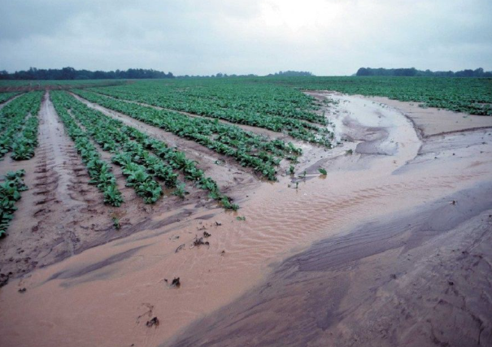
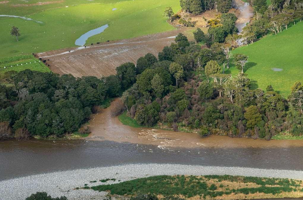
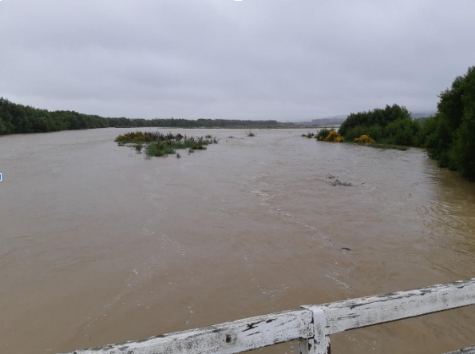
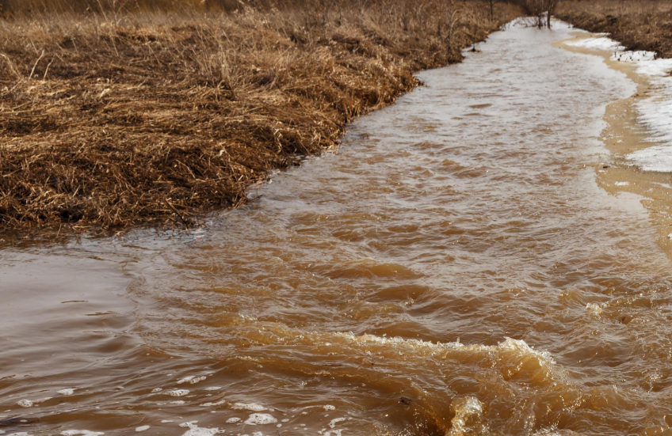

Almost half (44%) of sediment in NZ's waterways comes from pastoral land, with heavy rain causing landslips, slumps, and streambank collapses that send large volumes of sediment into waterways.
A Summary
Sediment pollution is a significant environmental concern characterized by the excessive presence of soil particles, sand, silt, and mineral fragments in water bodies, often caused or exacerbated by human activities. This pollution leads to the degradation of water quality, harming aquatic ecosystems, biodiversity, and human communities.
Sediment pollution refers to the situation when sediment particles accumulate in water bodies beyond natural levels, causing turbidity and transport of harmful pollutants. Sediment naturally forms through processes like erosion and weathering, but excessive sediment emerges mainly due to disturbance of the land, such as from agriculture, construction, deforestation, and urban runoff. Sediment can also carry pesticides, heavy metals, and organic toxins, acting as a carrier for other types of pollution.
Sediment Pollution in NZ
Sediment pollution in New Zealand's waterways is primarily the result of intensified soil erosion and land disturbance, leading to high concentrations of suspended and deposited material that damage water quality, aquatic habitats, and ecosystem function.
New Zealand loses about 192 million tonnes of soil annually due to erosion, equivalent to over 7 million dump truck loads.
Many New Zealand rivers have poor water clarity due to suspended fine sediment, with some areas experiencing significant degradation of riverbed habitats.
Elevated sediment mud content in estuaries is detrimental to benthic fauna and ecosystem health, with sediment accumulation rates often exceeding natural levels by several millimeters per year.
Consequences of Sediment Pollution
Sediment pollution reduces water clarity, blocks sunlight needed by aquatic plants, and can suffocate fish and other marine life. It transports harmful pollutants such as pesticides, nutrients, and heavy metals, further degrading water quality and posing risks to human health. Accumulated sediment alters aquatic habitats, disrupts river flow patterns, increases flooding risk, and raises water treatment costs. Biodiversity and economic activities like fishing and tourism are also negatively affected.